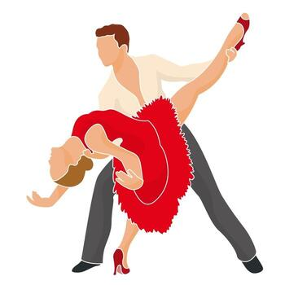
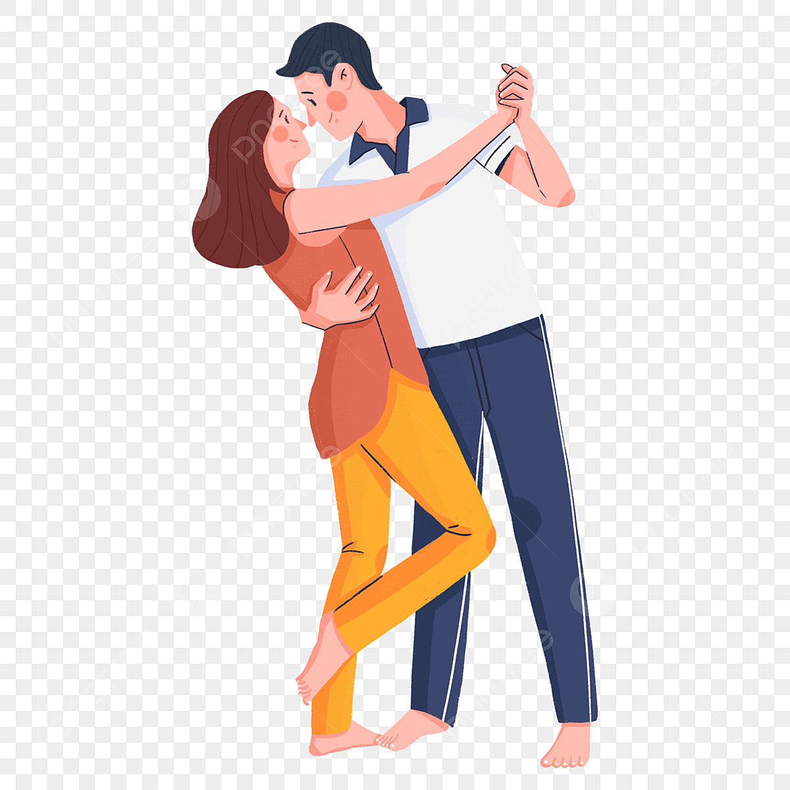
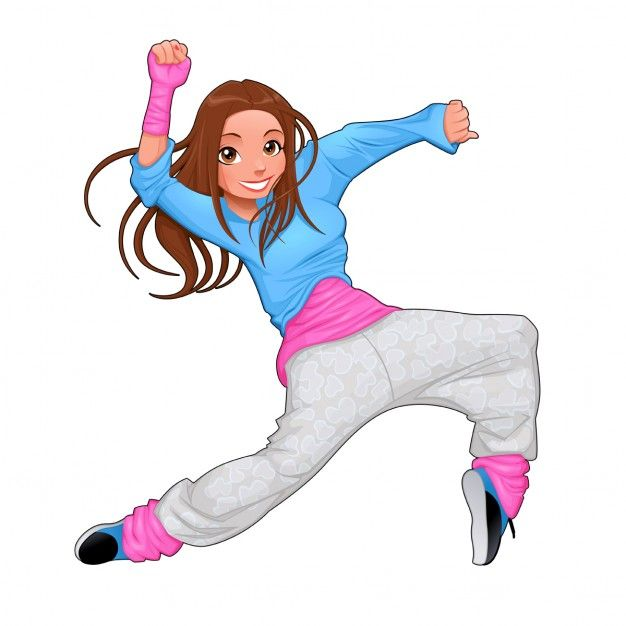
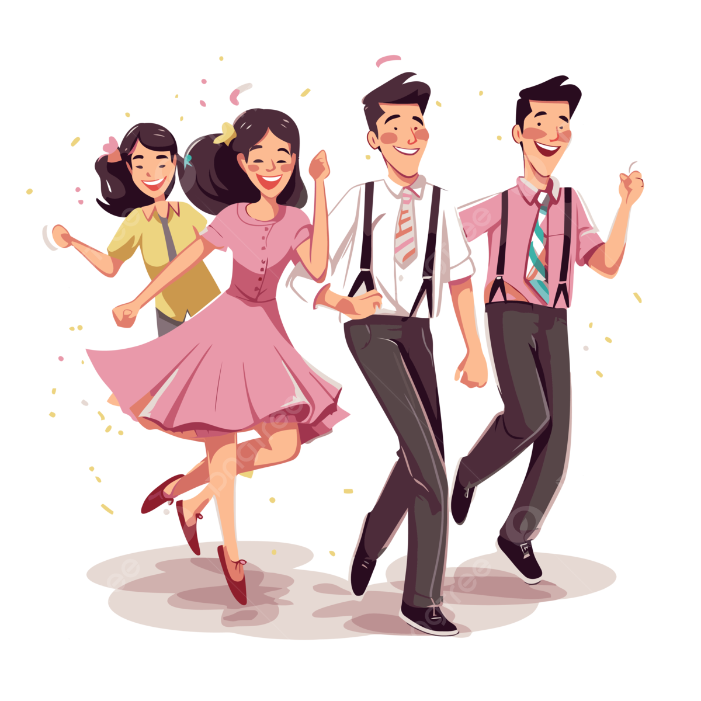

La salsa es un baile latino alegre y dinámico que se caracteriza por pasos rápidos y giros coordinados. Su ritmo constante permite mejorar la coordinación, la condición física y expresar emociones mediante el movimiento corporal..

La bachata es un baile romántico de ritmo suave que se baila principalmente en pareja. Sus movimientos controlados favorecen el equilibrio corporal, la conexión entre los bailarines y la expresión de sentimientos a través del baile.

El reggaetón es un baile urbano moderno que se distingue por movimientos fuertes y marcados del cuerpo. Su ritmo intenso ayuda a mejorar la resistencia física y permite expresar energía, actitud y estilo personal al bailar.

Aprender a bailar es una forma divertida de mantener el cuerpo activo y saludable. El baile mejora la coordinación, fortalece los músculos y aumenta la resistencia física. Además, ayuda a reducir el estrés y a sentirse mejor emocionalmente. También permite expresar sentimientos y emociones a través del movimiento, lo que favorece la confianza personal. Por último, el baile promueve la convivencia social, ya que facilita conocer personas y compartir momentos agradables en un ambiente positivo.
Salud
El baile es una actividad física que fortalece los músculos, mejora la resistencia y favorece el buen funcionamiento del corazón. Además, ayuda a mantener una postura correcta, mejora la coordinación y contribuye a llevar un estilo de vida activo y saludable.
Emociones
El baile permite liberar tensiones y disminuir el estrés diario. A través del movimiento corporal se pueden expresar sentimientos, mejorar el estado de ánimo y aumentar la confianza personal, favoreciendo el equilibrio emocional y el bienestar mental.
Social
El baile promueve la convivencia y el trabajo en equipo con otras personas. Facilita la comunicación, ayuda a crear nuevas amistades y permite compartir experiencias en un ambiente sano que fortalece las relaciones sociales.